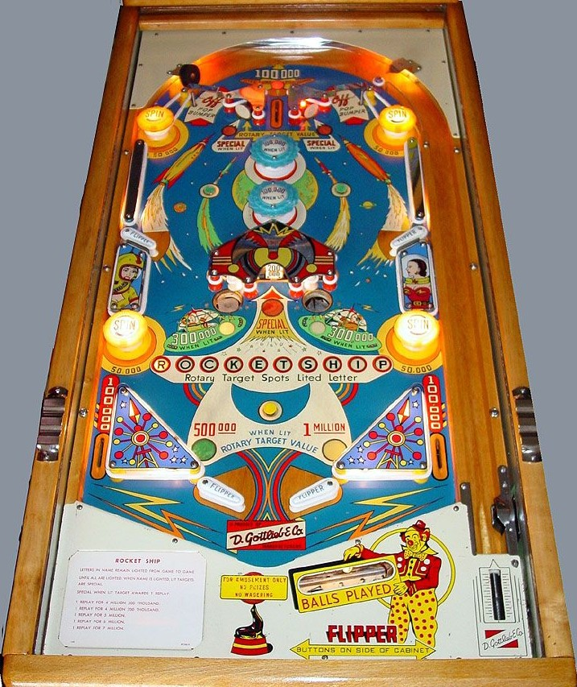

A plunged ball can either go through the lone center top lane or one of the rollunder gates. The top lane scores 100,000 points and lights one pop bumper. The rollunder gates turn off the pop bumpers if one is lit. When a pop bumper is lit, any 10,000-point switch around the game toggles which bumper is lit. Pop bumpers score 10,000 points or 100,000 when lit.
The center roto-target value can be 100,000, 200,000, 300,000, 400,000, 500,000, or 1,000,000 points. Hitting the roto-target itself in the center of the playfield or either of the two standup targets in the upper half of the playfield scores the roto value and spins the roto-target. When the roto-target is on 500,000 or 1,000,000 points, the lights near the slingshots will turn on to indicate that a big value is ready. Yellow passive bumpers score 50,000 points and also spin the roto-target.
Any 10,000-point switch rotates which letter in Rocket Ship is lit on the playfield. Collecting the roto-target value in any way will cause the letter indicated on the playfield to be lit on the backglass. Spelling Rocket Ship on the backglass lights the roto-target and top standup targets to score Special for the rest of the game. Special scores 1 credit. Rocket Ship letters on the backglass carry over from ball to ball and game to game until the full name is completed, at which point it will reset for the next game.
Gobble holes score 50,000 points or 300,000 when lit, and alternate being lit any time a 10,000-point switch is triggered.
Slingshots and all rollover buttons score 10,000 points. Out lanes score 100,000. There are no in lanes, kickbacks, gates, or center posts. There is no end of ball bonus or extra ball feature. Tilt ends game. All points are scored in increments of 10,000; match is indicated by a star lighting up next to the 10,000s column of the lighted score on the backglass.
The below picture of Rocket Ship's playfield was taken from the Internet Pinball Database, where it was provided by Raphael Lankar.
